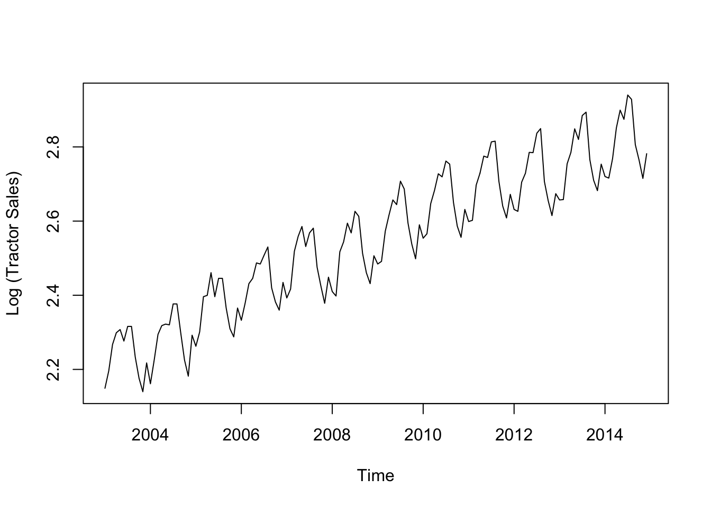
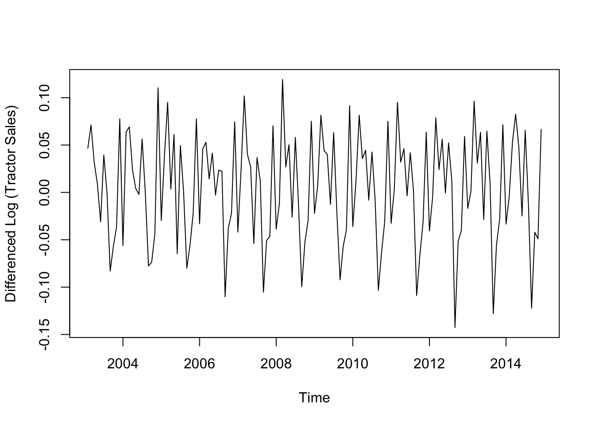
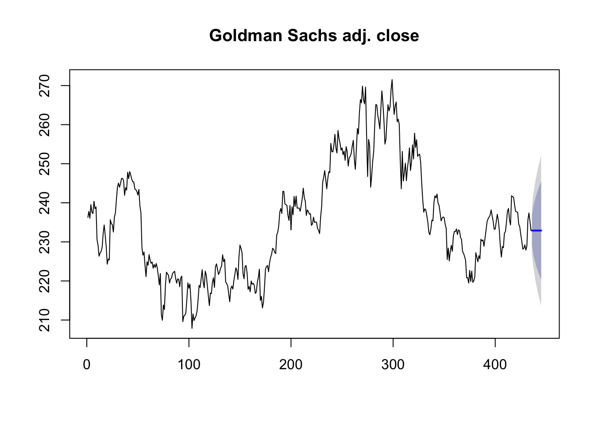
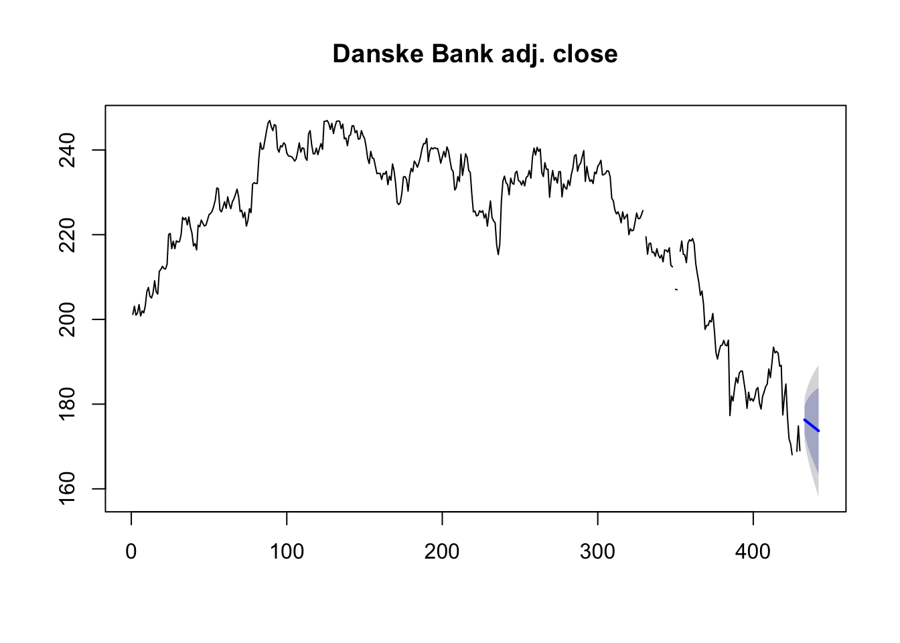

Kapitel 15 Forecast Aktiekurser
Man kan hente online aktiekurser med quantmod pakken installer denne med install.packages og library kommandoerne. Vi henter nedenfor Google lukkekurs til dato.
## [1] "GOOG"
## Series: GOOG[, 6]
## ARIMA(0,1,1) with drift
##
## Coefficients:
## ma1 drift
## 0.0838 1.0289
## s.e. 0.0519 0.6978
##
## sigma^2 estimated as 174.6: log likelihood=-1675.04
## AIC=3356.09 AICc=3356.15 BIC=3368.2## Point Forecast Lo 80 Hi 80 Lo 95 Hi 95
## 421 1217.467 1200.535 1234.400 1191.571 1243.363
## 422 1218.496 1193.526 1243.466 1180.307 1256.685
## 423 1219.525 1188.536 1250.514 1172.131 1266.919
## 424 1220.554 1184.538 1256.569 1165.473 1275.635
## 425 1221.583 1181.161 1262.005 1159.763 1283.403
## 426 1222.612 1178.219 1267.005 1154.718 1290.505
## 427 1223.640 1175.604 1271.677 1150.174 1297.106
## 428 1224.669 1173.246 1276.092 1146.024 1303.314
## 429 1225.698 1171.098 1280.298 1142.195 1309.201
## 430 1226.727 1169.125 1284.329 1138.633 1314.821require("quantmod")
getSymbols("GS",from = "2017-01-01", to = Sys.Date(),getSymbols.warning4.0=FALSE)## [1] "GS"
## Series: GS[, 6]
## ARIMA(0,1,0)
##
## sigma^2 estimated as 9.806: log likelihood=-1072.82
## AIC=2147.64 AICc=2147.65 BIC=2151.67## Point Forecast Lo 80 Hi 80 Lo 95 Hi 95
## 421 237.81 233.7969 241.8231 231.6725 243.9475
## 422 237.81 232.1346 243.4854 229.1303 246.4897
## 423 237.81 230.8591 244.7609 227.1795 248.4405
## 424 237.81 229.7838 245.8362 225.5350 250.0850
## 425 237.81 228.8364 246.7836 224.0861 251.5339
## 426 237.81 227.9800 247.6400 222.7762 252.8438
## 427 237.81 227.1923 248.4277 221.5717 254.0483
## 428 237.81 226.4592 249.1608 220.4505 255.1695
## 429 237.81 225.7707 249.8493 219.3975 256.2225
## 430 237.81 225.1195 250.5005 218.4015 257.2185
require("quantmod")
getSymbols("DANSKE.CO",from = "2017-01-01", to = Sys.Date(),getSymbols.warning4.0=FALSE)## [1] "DANSKE.CO"
## Series: DANSKE.CO[, 6]
## ARIMA(1,2,0)
##
## Coefficients:
## ar1
## -0.5282
## s.e. 0.0421
##
## sigma^2 estimated as 9.569: log likelihood=-1052.87
## AIC=2109.74 AICc=2109.77 BIC=2117.8## Point Forecast Lo 80 Hi 80 Lo 95 Hi 95
## 418 187.2734 183.3089 191.2378 181.21030 193.3364
## 419 184.8713 177.8171 191.9254 174.08288 195.6597
## 420 182.8524 171.5653 194.1395 165.59024 200.1146
## 421 180.6311 164.7278 196.5345 156.30905 204.9532
## 422 178.5167 157.3922 199.6412 146.20959 210.8239
## 423 176.3459 149.5768 203.1150 135.40603 217.2857
## 424 174.2049 141.3400 207.0697 123.94242 224.4673
## 425 172.0481 132.6961 211.4001 111.86443 232.2317
## 426 169.8996 123.6775 216.1218 99.20893 240.5903
## 427 167.7468 114.2987 221.1948 86.00506 249.4885